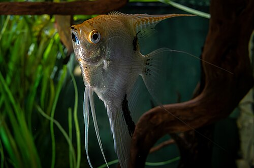
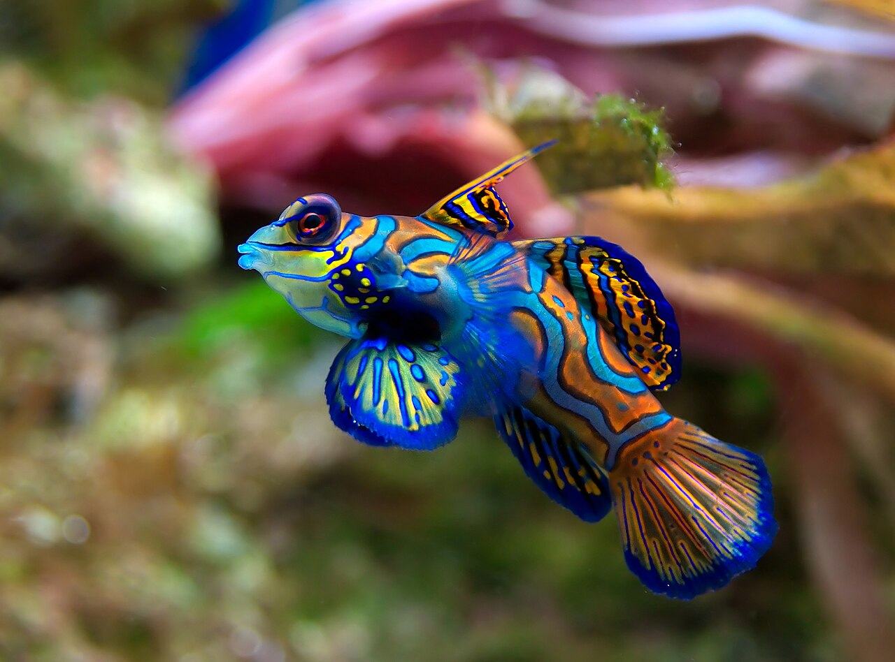
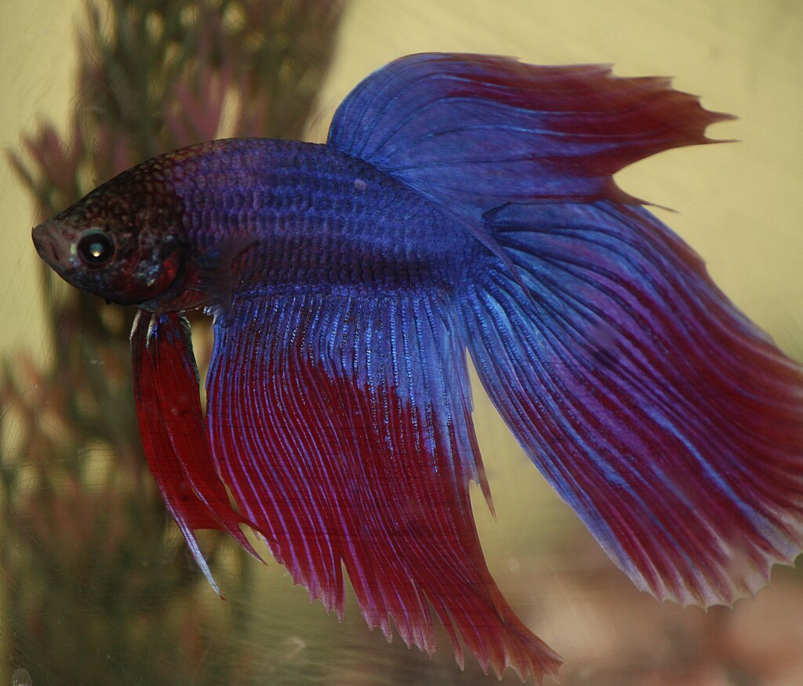

El Pez Payaso (Amphiprion ocellaris)
su habitat: Arrecifes de coral poco profundos, con presencia de anémonas marinas. Prefiere aguas cálidas, claras y protegidas.
Alimentacion: Omnívoro: algas, pequeños crustáceos, zooplancton. En cautiverio acepta comida comercial y alimentos congelados.
Dato curioso: Es inmune al veneno de la anémona gracias a su mucosa; además muestra hermafroditismo secuencial.
Informacion general: Pez pequeño y colorido, popular en acuarios; mide 7–11 cm y habita arrecifes tropicales.

Tiburón martillo (Sphyrna mokarran)
su habitat: Aguas costeras y mar abierto; frecuente en zonas superficiales y profundidades moderadas.
Alimentacion: Carnívoro: peces óseos, rayas, cefalópodos y crustáceos.
Dato curioso: La cabeza en forma de martillo mejora la visión y detecta señales eléctricas mediante ampollas sensoriales.
Informacion general: Tiburón de gran tamaño distribuido en mares tropicales y templados; muchas especies están amenazadas.

Pez ángel (Pterophyllum scalare)
Hábitat: Ríos de agua dulce con vegetación abundante en la cuenca del Amazonas.
Alimentación: Omnívoro. Consume pequeños crustáceos, larvas y plantas acuáticas.
Dato curioso: Cambia su coloración según su estado de ánimo o jerarquía dentro del grupo.
Información general: De cuerpo alto y aletas largas, muy apreciado en acuarios por su elegancia y comportamiento tranquilo.

Pez mandarín (Synchiropus splendidus)
Hábitat: Arrecifes de coral del Pacífico occidental.
Alimentación: Carnívoro. Se alimenta de pequeños crustáceos y plancton.
Dato curioso: Posee una de las coloraciones más brillantes del océano: azul, naranja y verde intenso.
Información general: Es tímido y de movimiento lento. Su piel segrega un moco tóxico que lo protege de los depredadores.

Pez betta (Betta splendens)
Hábitat: Aguas dulces y poco profundas del sudeste asiático, como arrozales y charcas.
Alimentación: Carnívoro. Come larvas de mosquito, gusanos e insectos pequeños.
Dato curioso: Los machos construyen nidos de burbujas para cuidar sus huevos y son muy territoriales.
Información general: Popular en acuarios por su belleza y aletas largas. Puede respirar aire atmosférico gracias a su órgano laberíntico.